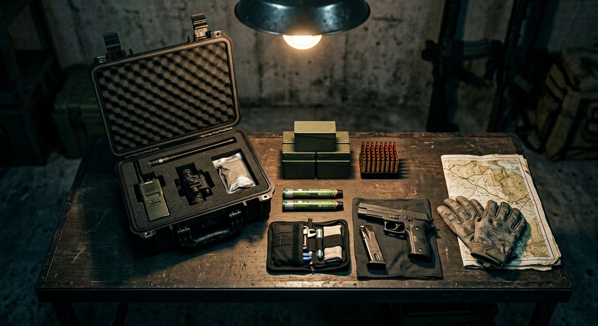
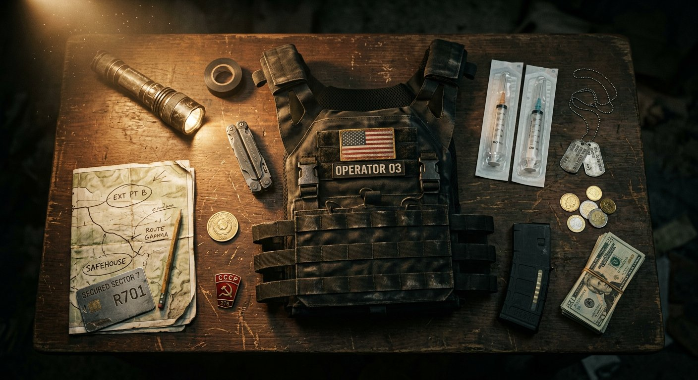
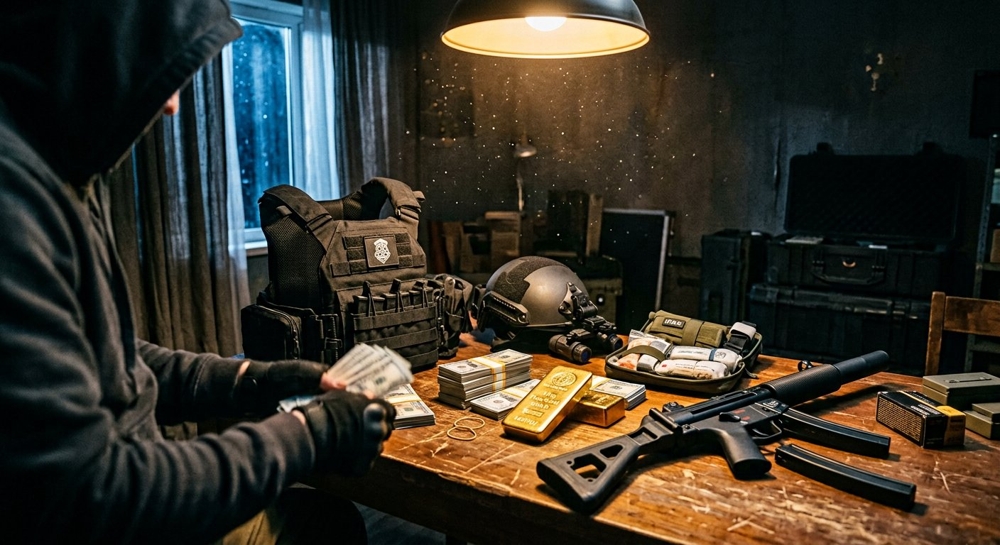

Ce qui protège, ce qui soigne, ce qui se revend
Un inventaire se remplit vite et se trie mal. La question utile n’est pas « est-ce que c’est rare » mais « est-ce que ça sert à quelque chose que je fais réellement ».
Les cinq raretés, et ce qu’elles ne disent pas
Les objets vont du vert au rouge. Une rareté élevée va souvent avec une valeur élevée, mais pas toujours avec l’utilité : un objet rouge de collection prend de la place et ne sert à rien en raid. Inversement, une pile de munitions correctes ne paie pas de mine et sauve un échange.
Le repère le plus fiable reste la valeur par case, lue dans le client au moment où tu joues. Une barre d’or en une case vaut mieux qu’un lot d’accessoires en cinq cases, même si le total affiché du lot est supérieur.
Ce qui vaut la place
- Or, bijoux et pièces de collection : compacts, revendables, sans usage tactique.
- Cartes d’accès : même les moins chères trouvent preneur, et une carte utilisée au bon moment vaut plus que sa revente.
- Accessoires d’arme : silencieux, optiques, lasers. Petits, chers, utiles si tu les montes.
- Documents et clés USB : souvent liés aux missions et au crafting.
- Munitions de qualité : uniquement si elles correspondent à une arme que tu joues réellement.
Ce qui encombre
- Armes de rareté basse : elles prennent six cases pour une valeur faible. Sauf si tu les utilises, elles partent au marché.
- Munitions standard en grande quantité : le poids et la place coûtent plus que la valeur.
- Consommables bas de gamme : à garder pour la prochaine partie facile, pas pour remplir le sac.
- Armures en dessous de la classe 3 : elles servent de kit d’apprentissage, pas de butin.
Les objets qui n’existent que sur une carte
Le carburant de fusée et l’antenne Satcom de Space City ne s’achètent ni au marché ni à l’hôtel des ventes. Il faut les trouver sur place et les sortir vivant, exposés dans le sac, parce qu’ils ne rentrent pas dans le coffre sécurisé. Le détail des emplacements et des sorties à privilégier est sur la page Space City.
Les cartes d’accès, dans le bon ordre
Une carte ramassée et gardée jusqu’à la fin du raid est un poids mort : la salle qu’elle ouvre a déjà été visitée. Le bon réflexe est d’en faire ta destination immédiate, avant les autres conteneurs. Si tu ne peux pas sortir en sécurité sur cette difficulté, revends-la : encaisser la valeur est souvent meilleur que tenter la salle.
Les cartes ont un nombre d’utilisations limité, qui varie selon la difficulté. Une carte à deux usages utilisée en facile rapporte moins qu’en normale, et l’écart n’est pas seulement une question de butin : il tient aussi au nombre de joueurs qui passent avant toi.

Trois exemples qui valent mieux qu’une théorie
Le calcul de valeur par case se fait en trois secondes une fois qu’on a l’habitude. Prends le prix de revente affiché, divise par le nombre de cases occupées, compare. Trois cas typiques :
| Objet | Cases | Pourquoi il part ou il reste |
|---|---|---|
| Plaque d’or ou bijou compact | 1 | Reste. Rapport valeur/place maximal, aucun usage tactique, se revend en un clic. |
| Fusil d’assaut de rareté basse | 6 | Part au marché, sauf si c’est l’arme que tu joues. Six cases pour une valeur faible bloquent deux objets de valeur. |
| Lot d’accessoires divers | 5 | Se juge à la pièce, pas au lot. Le total affiché est souvent supérieur à celui d’une barre d’or, mais rapporté à la place, il perd. |
Les prix bougent avec le marché : la méthode reste, les chiffres non. Lis toujours la valeur dans le client au moment où tu joues.
Le poids, deuxième plafond après la place
Un sac plein n’est que la moitié du problème. Le poids décide de ta vitesse, de ton endurance et de l’accès à certaines sorties. Les repères qui reviennent : l’encombrement commence bien avant la surcharge totale, et un équipement amélioré au site noir repousse le seuil. Ranger un objet dans le sac plutôt que de le garder en main change aussi la vitesse de déplacement, ce qui surprend souvent en début de raid.
Le coffre sécurisé, la seule chose qui survit
Tout ce qui n’est pas dans le coffre disparaît à la mort. La règle pratique : ce qui vient d’être trouvé de précieux y entre immédiatement, avant de fouiller la pièce suivante. Le carburant de fusée et l’antenne Satcom n’y rentrent pas, ce qui explique pourquoi ils se sortent souvent accompagnés d’une escorte.
Deux erreurs symétriques. Vider le coffre en début de raid pour « faire de la place » et perdre ce qu’il contenait. Et le remplir d’objets corrects au point de ne plus pouvoir y mettre la trouvaille exceptionnelle.
Le tri, en pratique
Un tri tous les deux ou trois raids suffit. Trois questions par objet : est-ce que ça sert à une mission en cours, est-ce que ça sert au crafting que je fais vraiment, est-ce que je porte un équipement qui l’utilise. Trois non, et l’objet part en vente.
Voir aussi : l’économie et la progression.

